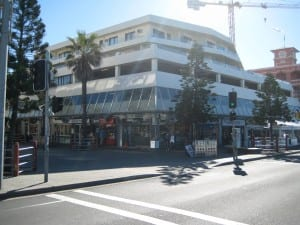

Dr What Video! has always had the most amazing collection of films and documentaries available for hire. Over the years I have spent many hours perusing the shelves, and chatting to owners Neal, Carol and Daniel Crisford about films and film stuff. I’ve also used their post-production services for various projects.
I can’t help feel somewhat sad about the closure of this long-time Bondi Junction business. Dr What has not only played a part in inspiring and educating me on a personal level in terms of my appreciation and love for cinema, documentaries and screen culture, but has also been a great help in my professional work and development.

just a little section of the DVD's available to hire at Dr What
I figure I’m not alone in being one of the many loyal customers of this fabulous Bondi institution who has wondered where the hell did the name Dr What! come from for a video store? Well here’s a little bit of history about Dr What!…
The business first opened in about 1981. Apparently one of the original co-owners was a Mr Watt, thus the idea for the name. But at this time, the business was not a video/DVD store. It was really just selling VCRs. My dad, who was lover of movies, bought our first VCR from Dr What. I guess we would have been classified as “early adopters” of the VCR, since my family was one of the first to have a VCR among people we knew. At this time, c.1982, VCRs were not all that affordable and so weren’t selling as fast as anticipated. So in order to encourage consumers to purchase a VCR, the owners of Dr What figured that by stocking movies that were hireable on video, people might be persuaded to buy a VCR. The strategy worked, but the demand to watch videos became so great that the business shifted direction to become more of a video store than a electronic (VCR) shop. And this is how Dr What started and grew into becoming one of the few video stores in Sydney with an extensive selection of art-house movies and documentary films.
The Crisfords became the owners of Dr What in 1983. 31 years later it is the end of an era as they close the video store for good. This is sad for the local community. I for one, am very sorry to see Dr What close down. However, the Crisfords are saying that Dr What will continue to have an online presence and the post production services will still continue.
Thanks Dr What, for many years of quality entertainment and inspiration as well as assistance in my professional work.
You will be missed by many…
In the Bondi area alone (including Bondi Junction), there were at least half a dozen picture theatres in operation around the 1920s, 1930s.
There were also picture theatres in neighbouring suburbs like Rose Bay and Randwick. When the Wintergarden Theatre in Rose Bay went into the hands of developers I remember feeling quite disappointed at the defeat that locals faced regarding the planned demolition of the theatre. The bulldozers came in 1987. Down went the Wintergarden and up came apartments.
There was a cinema on the corner of Hall St, O’Brien St and Glenayr Avenue and there was also the Kings Cinema at Bondi Beach, corner of Roscoe St (where I once lived) and Campbell Parade. This image of the Kings Cinema, is reproduced here with kind permission of The Mitchell Library, State Library NSW.

THEN -Kings Cinema, Corner of Campbell Parade & Roscoe Street, Bondi Beach, circa 1930s
By 1970, most of these cinemas had closed, though there were still two or three operating in Bondi Junction. I’m not sure why the cinemas closed but I suspect it may have had something to do with the advent of television and perhaps offers from developers which,at the time, were maybe too reasonable to refuse.
I can remember going to see Mary Poppins in the Metro cinema in Bondi Junction as a very young child and as a young adolescent, I remember seeing a couple of flicks at the Star Cinema, also in Bondi Junction which closed in the mid-late 1970s.
I do remember the building which was formerly the King’s Cinema at Bondi Beach but by the time I was a young girl, this cinema was no longer in operation. However at one point in the late 1970s it was used to house The Creole Disco. Of course this site (and gorgeous art deco building) was bulldozed in the ealry 1980s to make way for what else – an apartment block known as The Breakers!


NOW - The Breakers, corner of Campbell Parade and Roscoe Street, Bondi Beach
Of course today Bondi has the wonderful Westfield mulitplex, pulp cinema, to replace the old picture theatres which clearly were a “waste of space” in some people’s eyes, or prime real estate that could be capitlised upon. So now, when we want an out of home community-based screen experience, the only cinema that Bondi has to offer (apart from the seasonal outdoor film events) is the mulitplex (Event) cinema in Bondi Junction – convenient for the “drive, park and eat” lifestyle which characterises so many of our lives today. And when we get that parking spot, chow down on some food from the food hall and then collect the tickets that we’d pre-booked online, we go and lap up a flick in a cinema without character, and without cultural history.
Does anyone remember going to any of the old picture theatres in the Bondi area? or does anyone have a story to tell about any of the old cinemas? or perhaps have any photos of these now long gone buildings?
]]>